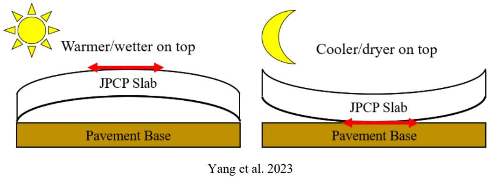
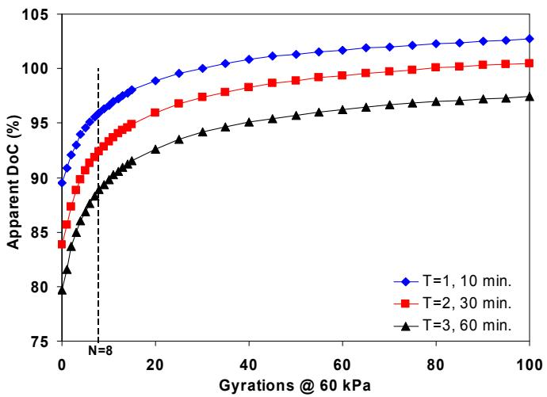
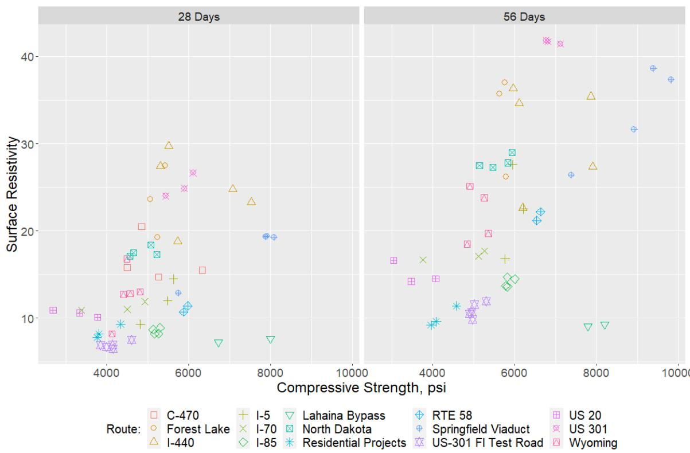
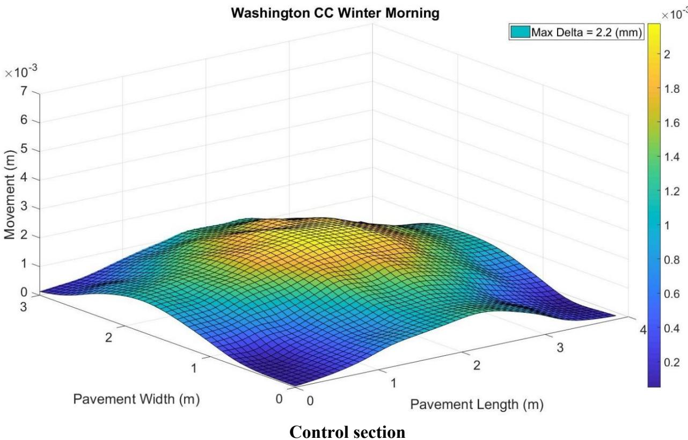
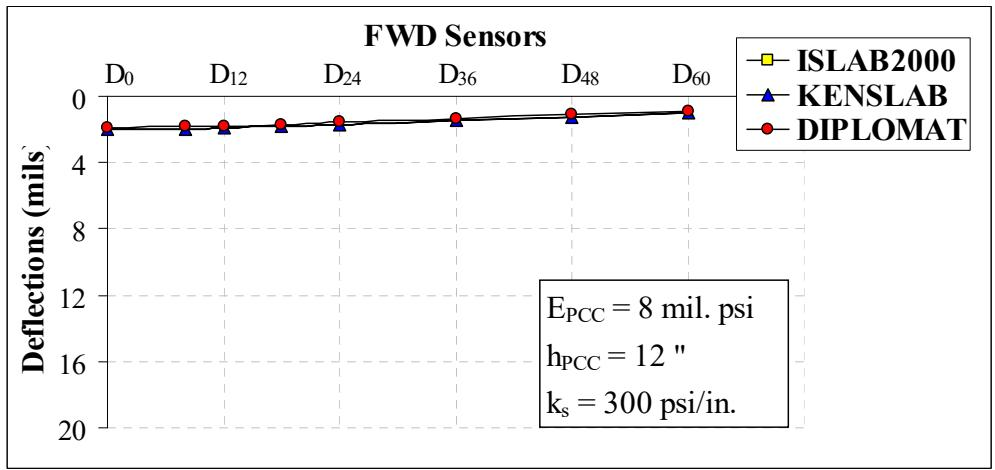
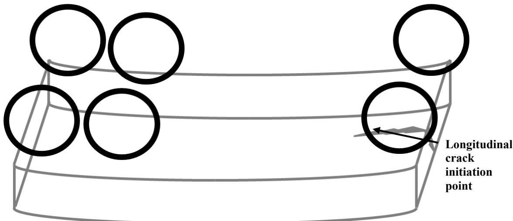
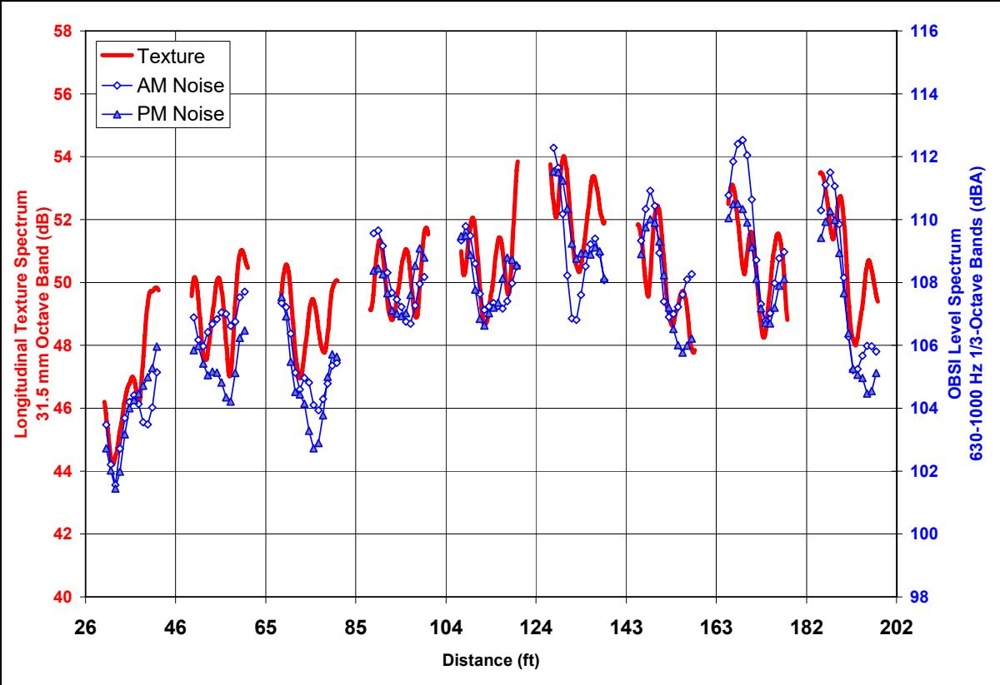
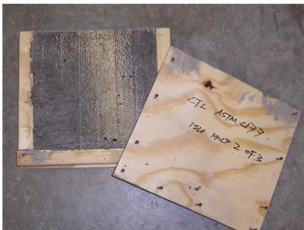

Curling and Warping
Curling and warping are distress phenomena categorized under Early-Age Behavior, Curing & Distress that arise from environmental gradients within concrete slabs [9]. Curling is primarily caused by moisture gradients that create differential shrinkage between the slab’s top and bottom surfaces, whereas warping results from temperature differentials where the slab’s center expands or contracts relative to its edges [2][3]. These non-uniform distributions of moisture and temperature induce differential strains throughout the slab depth, leading to curvature deformations such as upward or downward bending depending on the gradient direction [9], which affects pavement smoothness, especially during the critical early-age period immediately following construction. Curling and warping are central concerns in the Early, Frequent, and Detailed (EFD) Study. [1] The category comprises Curling and Warping as distinct physical phenomena driven by temperature and moisture gradients, respectively, alongside derived metrics like Curvature IRI, Deflection Ratio, Degree of Curvature, Equivalent Temperature Difference, Pseudo Strain Gradient, and the Second-Generation Curvature Index (2GCI) used to quantify these effects. [2], [3] While Curling and Warping describe the fundamental slab deformation mechanisms, the other children represent specific analytical tools or indices developed in Phase II studies to isolate, normalize, or model curvature from pavement profile data for performance assessment. [3] These indicators differ in their computational basis, ranging from direct geometric derivatives like Degree of Curvature to algorithmic fittings via 2GCI and normalized ratios that minimize joint spacing effects. [3]
Sources (26)
Sub-concepts (8)
Pavement Profile Changes
Pavement profiles change seasonally due to behavioral factors including joint opening, warping, swelling soils, and frost heave [4].
Pavement curling is a specific physical instance of the broader phenomenon known as curling and warping [3]. While these terms are often used interchangeably to describe slab deformation caused by temperature or moisture gradients, they can be distinguished by their typical manifestations: pavement curling refers specifically to the upward deformation at slab edges and corners, whereas warping typically involves downward bowing in the central region of the slab. This distinction arises because a negative gradient, where the bottom is wetter than the top, causes upward curvature primarily at the corners [2], while positive gradients generally induce downward deflection across the slab body [9].
Because diurnal and seasonal impacts vary dramatically among locations, seasonal slab curvature trends may differ significantly from diurnal analysis periods depending on site-specific conditions [3]. Curling and warping can cause changes in the International Roughness Index (IRI) as great as 30 inches per mile within a single day under certain climate and material combinations [5].
 Diurnal slab curvature [3]
Diurnal slab curvature [3]
The degree of curvature serves as a primary metric for assessing curling severity by quantifying the vertical displacement per unit length of the concrete slab edge [3]. This physical indicator is one of several parameters used to evaluate the impacts of design factors and environmental variations on pavement behavior [3]. Consequently, it functions as a key tool in understanding the fatigue failures associated with repeated slab curvature changes under traffic loading [3].
Pavement warping is a specific moisture-driven phenomenon within the broader category of curling and warping, which encompasses curvature caused by both temperature and moisture gradients [9]. This upward or downward curvature results from differential shrinkage between the top and bottom surfaces when non-uniform moisture levels create strain differences through the slab depth [3]. Specifically, variations in moisture content lead to distinct positive or negative gradients that determine whether the slab curves downward or upward [3].
Permanent Curl and Equivalent Temperature Difference
The EFD Phase II study quantified the permanent upward curl that exists even under isothermal slab conditions (zero temperature gradient), identifying a “built-in” or “permanent” curl caused by two mechanisms acting during the first hours after placement [6]: a drying shrinkage gradient, where the top surface dries faster than the bottom to create a moisture gradient that shrinks the top more, and a built-in temperature gradient at set, where hydration heat and ambient conditions create a temperature profile through the slab depth that becomes “locked in” as a permanent curvature [6]. Positive built-in temperature gradients from hot weather placement can cause irreversible upward curling, leading to permanent loss of support beneath the pavement slab [7]. The combined effect of both mechanisms is expressed as an equivalent linear temperature difference ($\Delta T_{eff}$) across the slab depth, representing the uniform temperature gradient that would produce the same slab curvature [6]. At Burlington, field LVDT measurements for a morning slab (early-morning placement, 72°F, 80% RH) showed an estimated $\Delta T_{eff}$ of -8°F, while an afternoon slab (afternoon placement, 85°F, 40% RH) showed -12°F; the larger permanent curl in the afternoon-placed slab was attributed to higher ambient temperature and lower relative humidity during early hydration, which directly translated to poorer smoothness for that section [6]. FE models using ISLAB 2000 and EverFE 2.24 both estimated $\Delta T_{eff}$ between -8°F to -12°F, matching LVDT measurements within $\pm$1°F [6]. This average of -10°F matches the MEPDG default effective temperature difference for JPCP design [6].
Curling and warping are driven by vertical temperature gradients across the slab thickness [2]. The Equivalent Temperature Difference quantifies this gradient as a single scalar value representing the difference between the top and bottom surface temperatures [3]. This metric serves as a unified measure for these deformations, where specific values correspond to the magnitude of slab uplift or curvature [2].
The magnitude of drying shrinkage is influenced by the water content per unit volume, cement type, aggregate characteristics, ambient temperature and relative humidity, curing conditions, and pavement thickness, with a direct functional relationship between the water-to-cement ratio (w/c) and shrinkage value established through multiple regression analysis [8]. While the default 28-day elastic modulus in MEPDG is 3,942,355 psi, the average value from Iowa curling and warping project test data was significantly higher at 4,820,000 psi, indicating that standard MEPDG defaults may not accurately represent local concrete properties for mechanistic-empirical design [8]. Curling and warping are distinct from simple contraction and expansion because they involve non-uniform volume changes at different slab depths and locations, whereas contraction/expansion primarily involves horizontal volume changes related to joint spacing design [9]. Built-in curling during concrete setting and diurnal curling during the pavement’s service life are integrated as performance parameters in the AASHTO Mechanistic-Empirical Pavement Design Guide (MEPDG) software model [3]. For curled-up sites near reliable climate stations, curling and warping behavior decreases as the overall equivalent temperature difference increases, with indicators approaching zero when the difference is near 0°F [3]. After seven years of service, some concrete slabs can exhibit a reversal in curling direction from upward to downward, with diagonal profile deflections changing by up to 39.1 mils [3]. Additionally, D-cracking results from calcareous aggregates that absorb water readily but release it slowly, maintaining a critically saturated state during cyclic freezing and thawing which causes internal expansion and cracking; this phenomenon manifests as fine cracks running parallel to slab joints or free edges and is mitigated by prohibiting susceptible aggregates through specific freeze-thaw screening protocols [10].
Moisture gradients are most pronounced within the top two inches of the slab depth, where moisture distribution varies significantly compared to deeper areas that remain at approximately 80% saturation or higher. [3]
Built-in Curvature and Mitigation Strategies
The degree of slab curvature depends on the curvature “built in” during construction, but the majority of JPCP pavements also exhibit diurnal changes in slab curvature. The EFD Study instrumented both morning and afternoon construction test sections to capture the additional effects of heat from cement hydration, and Phase II confirmed that morning paving produces less permanent curl than afternoon paving under hot/dry conditions [1], [6]. Concrete overlays exhibit higher susceptibility to curling and warping than full-depth pavements due to a greater surface-area-to-volume ratio, which accelerates water loss during construction and generates elevated curvature stresses [11]. This is further influenced by the presence of a rigid base beneath unbonded concrete overlays, which restricts slab movement and amplifies internal curling and warping stresses compared to pavements on flexible or granular bases [11]. Additionally, skewed joint orientations increase the magnitude of curling and warping stresses by creating non-uniform restraint conditions that prevent uniform slab curvature relief [11], which significantly increases the likelihood of longitudinal cracking compared to rectangular joint designs; consequently, adopting rectangular joints in widened JPCP design has been shown to mitigate these stress concentrations and reduce long-term cracking issues [12]. Curling and warping stresses also increase with larger slab dimensions, necessitating shorter joint spacing in thinner overlays to prevent excessive mid-panel curvature and associated roughness [11]. For 5-inch thick unbonded overlays with 15-foot transverse joint spacing, experienced cracking at slab corners has been attributed to curling and warping stresses, but increasing overlay thickness to 6 inches significantly reduces this corner cracking for the same joint spacing [13]. Thicker concrete overlays (e.g., 6-inch) exhibit faster joint activation rates than thinner sections (e.g., 4-inch) because increased slab thickness amplifies the temperature differential between the top and bottom surfaces, thereby generating higher curling stresses that drive crack formation [14]. Optimized joint spacing design for concrete overlays may target L/ℓ values between 4 and 7 to balance timely joint activation against risks associated with longer slabs, such as larger joint openings, increased random cracking potential, and elevated curling stresses [14]. Shorter joint spacings, such as 9 x 9 ft configurations, generally result in larger stresses in whitetopping overlays compared to wider spacings because shorter joints reduce curling stress relief; meanwhile, the maximum interface shear and normal stresses for composite pavements typically occur at the whitetopping–asphalt concrete (ACC) interface rather than within the concrete slab itself [15]. In cooler weather paving, concrete can set from the bottom up, delaying the sawing window; however, temporarily covering the overlay with plastic after paving helps the concrete set properly and allows for timely sawing, while specifying a minimum overlay mix temperature of 65°F mitigates set-time issues related to day/night temperature differentials [13]. Structural macrofibers in concrete overlays mitigate differential slab movement caused by curling and warping while holding cracks tightly together, thereby increasing fatigue capacity and fracture toughness [11]. Creep produced by stresses from surrounding restraints can counteract the effect of shrinkage deformation (upward warping), potentially resulting in a flat slab shape or downward curvature if upward curling is low [2], and some studies have observed concrete slabs that consistently exhibit a curled-down shape, indicating the presence of built-in downward curling rather than the typical upward curvature [5].

Curling and warping behavior of concrete pavement slabs [5]Fly ash replacement generally reduces water demand and functions as a water-reducing agent, whereas slag replacement increases water requirement for a given consistency; combining both materials can yield flowability comparable to OPC concrete [16]. The maximum heat of cement hydration decreases as supplementary cementitious material replacement levels increase, resulting in a lower risk of thermal cracking compared to ordinary Portland cement concrete [16]. HIPERPAV modeling indicates that while 15% fly ash and 20–35% slag replacement eliminates early-age cracking potential in summer conditions, spring or fall weather results in stresses much closer to developed strength, indicating a higher cracking risk [16]. Autogenous shrinkage becomes a critical volume change mechanism in concrete with water-to-cementitious material ratios below 0.40 due to self-desiccation during hydration, and when this shrinkage is restrained by factors such as embedded reinforcement or frictional drag on grade, the resulting tensile stress can exceed the concrete’s strength and induce cracking [10]. Internal curing using water-filled expanded lightweight aggregate (LWA) reduces built-in stress and upward slab curling by dispersing curing water throughout the concrete depth, thereby mitigating autogenous shrinkage and moisture gradients that drive early-age curvature [17]. This mechanism is particularly effective in low w/cm ratio concretes where external water penetration is limited [17]. The use of internally cured concrete has been reported to result in a reduction in upward slab curling, which lessens the detrimental effects of long-term drying shrinkage on pavement performance because the internal water supply sustains hydration and reduces self-desiccation within the paste matrix [17]. Internal curing can also reduce built-in stress and curling in flatwork paving and patching elements by providing a sufficient volume of water that is released to the paste as needed from lightweight aggregate inclusions, allowing for a greater temperature swing in the concrete before cracking occurs and thereby stabilizing early-age curvature [17]. Internal curing technology reduces both temperature and moisture differentials within the concrete system, which directly decreases warping and curling movements, improving ride quality and reducing the risk of corner breaks [18]; furthermore, internal curing allows for extended slab sizes in thinner concrete overlays by reducing curling and warping stresses, which helps keep saw-cuts out of the wheelpath while maintaining improved permeability [18]. The buffering action of lightweight fine aggregate maintains consistently lower moisture gradients in internally cured sections compared to conventionally cured sections, although temperature differentials do not show a clear trend with respect to mixture type [18]. Internal curing concrete mixtures are designed by adjusting conventional mixture proportions to account for the absorption and desorption properties of locally produced lightweight aggregates (LWA), ensuring the IC agent provides adequate water volume while maintaining appropriate spacing within the matrix to effectively reduce plastic, autogenous, and drying shrinkage cracking [17]. To ensure consistent moisture release for internal curing, prewetted lightweight fine aggregate (LWFA) is typically conditioned by wetting a pile with a sprinkler for 48 hours, then draining for approximately 12 hours before batching; surface moisture determination can be performed using a centrifuge test at 2,000 rpm for 3 minutes to remove surface water and accurately assess the internal water available for curing [17]. Internal curing using LWFA can increase calcium silicate hydrate (C-S-H) content by approximately 20% at 28 days and decrease the modulus of elasticity, which reduces stresses under shrinkage strains by providing water reservoirs within the matrix to mitigate premature pore drying in low w/cm ratio concretes [19].
 Example of internally cured concrete being used for concrete pavement patching [17]
Example of internally cured concrete being used for concrete pavement patching [17]
Superabsorbent polymers (SAPs) can serve as internal curing agents that absorb and desorb water based on osmotic pressure differences, with absorption kinetics governed by cross-linking density and molecular weight [20]. Higher molecular weight SAPs possess greater internal network space for water retention but exhibit slower desorption rates due to restricted bond expansion [20]. SAPs with higher cross-linking densities demonstrate greater mechanical strength during mixing but reduced swelling capacity, whereas lower molecular weight SAPs retain absorbed water more tightly due to weaker bonding between hydrophilic groups and water molecules [20]. SAPs can function as physical air voids after desorption, creating a more stable air void system compared to traditional chemical air-entraining agents (AEAs) while mitigating adverse effects on mechanical performance [20]. The incorporation of SAPs into concrete mixtures typically reduces 28-day compressive strength by approximately 8% due to pore formation from released water, though this may be offset if internal curing benefits outweigh porosity drawbacks [20]. SAP-containing concrete exhibits higher permeability and lower electrical resistivity than control mixtures, attributed to incomplete water absorption by SAPs that increases the effective w/cm ratio and creates a more porous matrix [20]. SAPs can delay both initial and final setting times in concrete mixtures when insufficient water is absorbed during mixing, effectively increasing the w/cm ratio and altering hydration kinetics [20]. SAPs with higher cross-linking densities, such as PX-1A-TA, retain slump better over time due to larger absorption capacity, whereas presoaked SAP mixtures may experience further strength declines if insufficient water is released during mixing [20]. SAP particles remain structurally intact during mixing and placement, as evidenced by their ability to regain a swollen state when rewetted in hardened concrete without agglomerating [20]. SAP dosage is typically specified between 0.3% to 0.6% of binder mass, with paste volume including SAP limited to no more than 26.5% of concrete design volume and maximum w/cm ratio capped at 0.42 [20].
 Effects of SAP on the slump of concrete for (a) SAP-a and (b) SAP-b, where Sa-0 is dry and Sa-10 is pre-absorbed (particle size: SAP-a > SAP-b) [20]
Effects of SAP on the slump of concrete for (a) SAP-a and (b) SAP-b, where Sa-0 is dry and Sa-10 is pre-absorbed (particle size: SAP-a > SAP-b) [20]
Mixing time affects pervious concrete placeability, with a relatively uniform decrease in workability occurring as mixing time increases, requiring regular increases in compaction energy for different binder contents [21]. Pervious concrete curing methods significantly impact durability; samples cured under plastic sheets for seven days demonstrated the best abrasion resistance and highest flexural strength compared to other evaluated techniques [21].
Measurement Methods and Instrumentation
- DEMEC caliper measurements: Stainless steel discs attached to the pavement surface for joint movement and surface strain measurements using “peacock” patterns at slab corners [1]
- LVDTs: Linear variable distance transducers installed at slab corners and mid-slab free edges to measure absolute vertical slab movement [1]
- Inclinometer profiling: Dipstick® (Phase I) and SurPRO 2000 rolling profiler (Phase II) measuring pavement surface profiles in longitudinal, transverse, and diagonal patterns during diurnal cycles [1], [6]
- Temperature gradient monitoring: Thermochron iButton® sensors at multiple depths to correlate slab temperature profile with curvature changes [1]
- Humidity monitoring: Hygrochron iButton® sensors embedded in predrilled dowels to measure internal slab relative humidity — deployed successfully in Phase II [6]
Inertial profiling requires small sample and recording intervals to recognize smaller texture wavelengths, with aliasing in the profile due to texture requiring recognition. [4]
Joint behavior instrumentation includes Demec gauge studs installed on representative and consecutive joints to relate joint opening to temperature. [4]
Pavement temperatures are measured at a minimum of 5 depths, including the base, used for gradient analysis, joint opening prediction, and maturity-based strength estimates. [4]
Curling and warping deflections are continuously monitored for up to 7 days using LVDT sensors referenced to deep-ground elevation. [4]
The Second-Generation Curvature Index (2GCI) serves as a standard method for characterizing concrete pavement curling and warping by applying curve-fitting techniques to surface profile measurements [5]. Specifically, this approach utilizes an algorithm that fits the shape of the slab according to a second-order polynomial to interpret raw elevation data from high-speed profilers [3]. This process allows engineers to isolate the distinct slopes of the slab’s top and bottom surfaces, thereby quantifying the degree of curvature associated with thermal and shrinkage effects [5].
Concrete workability in pervious mixtures is quantified using a gyratory compaction test method rather than slump tests, with the workability energy index (WEI) defined as the area under the compaction curve from one to eight gyrations. [21]

Effect on workability with increased mixing time [21]Stationary LiDAR devices are used to scan pavement surfaces under varying temperature and moisture conditions, calculating slab movement by comparing point cloud data against a baseline reference surface recorded during early morning spring construction. [18]
The surface resistivity test (AASHTO T 358) utilizes a four-pin Wenner probe array to measure the electrical resistivity of water-saturated concrete, providing a rapid and nondestructive assessment of the material’s resistance to moisture penetration. This method applies an AC potential difference across outer pins while inner probes measure the resulting potential difference to calculate resistivity in Ohms-cm. [10]

Scatter data for surface resistivity versus compressive strength [10]The SAM number (AASHTO T 395) characterizes the air-void system in fresh concrete through sequential pressurization at 0.21 MPa and 0.31 MPa, where the difference in equilibrium pressure between two sequences is reported as the index. This method correlates to the air-void spacing factor obtained from ASTM C457 and provides a practical alternative for assessing durability without requiring hardened concrete microscopy. [10]
The RapidAir test is an effective means of determining the entrained air void structure in pervious concrete, where air entrainment increases paste volume and improves both workability and durability. [21]
Field investigations using stationary LiDAR scanning have demonstrated that internal curing with lightweight fine aggregate (LWFA) significantly reduces slab movement by buffering moisture gradients, resulting in lower modeled deflections under extreme temperature and moisture differentials compared to conventionally cured sections. [18]

Winter pavement surface movement in Washington County: IC section (top) and control section (bottom) [18]The tea bag method is used to determine free swell capacity of SAP powders in saline or aqueous solutions, providing a standardized test for absorption properties prior to concrete mixture design. [20]
 Absorption of various SAPs in cement pore solution [20]
Absorption of various SAPs in cement pore solution [20]
MIRA testing for joint activation is sensitive to ambient temperature variations; colder temperatures cause slabs to contract and joints to open, improving detection sensitivity, whereas warmer temperatures cause expansion and joint closure, potentially leading to false ‘no crack’ readings in thin sections. [14]
Finite Element Modeling and Numerical Simulations
During Phase II, two FE models for early-age slab curvature were developed and validated [6]: the 2D FE model ISLAB2000 for rigid pavement analysis, which computed slab curvature under varying temperature gradients, and EverFE 2.24, a 3D FE model supporting multiple slabs, doweled joints, and nonlinear temperature gradients through the slab depth. Both models confirmed that a ΔT_eff of -8°F to -12°F explains observed slab curvature at Burlington and Marshalltown field sites [6]. Furthermore, artificial neural network models trained on finite element solutions can predict pavement surface deflections and tensile stresses at the bottom of jointed concrete airfield pavements with average errors less than 0.5 percent compared to direct finite element analysis results [22].

Comparison of ISLAB2000, DIPLOMAT, and KENSLAB finite element model solutions for different pavement and foundation configurations [22]In a separate statistical study using backward stepwise fitting with a full factorial design on 170 data sets, an R-square value of 0.76 was yielded for predicting compressive strength based on age, water-to-binder ratio, cementitious material factor, and unit weight [8]. Additionally, numerical simulations using ISLAB 2005 demonstrate that top-down longitudinal cracking potential increases with higher negative temperature gradients, particularly when transverse edge loading is applied; in these instances, the critical tensile stresses driving this failure mode are oriented perpendicular to the traffic direction (x-direction) and concentrate around the transverse joint [12].

Failure mechanism for longitudinal cracking from field investigation [12]A complete evaluation of the impact of climate on pavement materials, reactions, and hazards is one of the fundamental advancements in pavement design included in PMED. [3]
This hourly ambient climate data, which includes wind speed, cloud cover, and relative humidity, is utilized by the EICM to simulate temperature and humidity within each pavement layer and in the foundation for mechanistic-empirical design [3].
While considering impacts of temperature and humidity in JPCP design, the EICM determines instantaneous hourly positive and negative temperature gradients generated by solar radiation [3].
Phase II Quantitative Findings and New Indicators
2023) provided the first large-scale quantitative assessment of curling and warping across 36 Iowa sites using a high-speed profiler and advanced algorithms. These methods included the Second-Generation Curvature Index (2GCI), which uses Westergaard idealized shape to fit profiles to produce Pseudo Strain Gradient (PSG) and radius of relative stiffness, and a simpler second-order polynomial fitting that produces deflection and degree of curvature; both were validated against a walking profiler and the ISU portable device at Reiman Gardens, Ames, Iowa. New indicators developed for these assessments include Curvature IRI, which is the IRI from a curvature-related profile component that isolates curling/warping from other roughness, the Deflection Ratio (deflection normalized by slab length to remove joint spacing bias), Degree of Curvature (Curling) representing the physical curvature rate (k ≈ d²z/dx²), and Pavement Deflection (Curling), which is the maximum mid-chord deflection from a fitted curve. Quantitative results showed that all four indicators approach zero when the total equivalent temperature difference is near 0°F, with curling/warping being highest in the fall, lowest in the spring, and consistently higher during morning measurements than at noon or afternoon. Furthermore, rectangular slabs and tied PCC shoulders reduced curling/warping significantly, and QMC mix designs showed reduced curling/warping compared to pre-QMC mixes [3]. Regarding early age, the degree of curling and warping can be relatively small, ranging from -42 to -14 mils in some cases, which is smaller than the typical values of 60 to 150 mils observed by other researchers [2]. At specific sites, the degree of curling and warping along diagonal directions has been correlated to pavement performance indices such as IRI and PCI, where positive values represent upward curling and negative values represent downward curling [2].
 Note: the degree of curling and warping were measured using strain gages installed in the longitudinal direction at mid-panel. McCracken et al. 2008 Figure 7. Seasonal contributions to the degree of curling and warping in restrained and unrestrained slabs [2]
Note: the degree of curling and warping were measured using strain gages installed in the longitudinal direction at mid-panel. McCracken et al. 2008 Figure 7. Seasonal contributions to the degree of curling and warping in restrained and unrestrained slabs [2]
Curvature International Roughness Index (IRI) serves as a specific quantitative metric for isolating the roughness contribution of slab curvature from other pavement distress types within the Curling and Warping framework. Research has developed methods to distinguish this curvature-related IRI, which arises from curling and warping, from non-curvature-related IRI caused by issues such as spalling or faulting [3]. Consequently, it is utilized alongside other indicators like deflection and degree of curvature to assess the behavior and effects of slab curling and warping on pavement performance [3].
Curling and warping induce non-uniform vertical displacements in concrete slabs, a behavior that has been measured using various techniques including walking profilers and high-speed profilers [3]. The degree of this curvature is quantified by evaluating the difference between center deflection and corner deflection under load, serving as an indicator for these environmental effects [3]. Consequently, Deflection Ratio functions as an evaluation metric for assessing the extent of curling and warping in pavement structures.
Pseudo Strain Gradient (PSG) is a metric that quantifies the gross strain gradient required to deform a concrete slab from a flat baseline into its curled shape [3]. This value serves as an indicator of the non-linear thermal gradients through the slab thickness that drive differential expansion and contraction during curling events. Consequently, PSG can be used to summarize the level of curling and warping in pavement profiles [3].
Additional research into concrete properties and pavement mechanics includes concrete drying shrinkage tests for a typical Iowa PCC mix (C-3WR-C20) conducted using three 3x3x11.25 inch prisms cast in cold-rolled steel molds, where length changes were recorded at different time intervals according to ASTM C157 after initial storage at moisture conditions until 28 days old [8]. Loss of support beneath pavements can be evaluated from FWD tests by calculating the zero-load intercept value, where an intercept greater than 2 mils indicates a void underneath the pavement [7]. In terms of design and geometry, mechanistic-empirical design using AASHTOWare Pavement ME software indicates that internally cured concrete can mitigate transverse cracking when joint spacing is increased from 15 to 20 feet, while slightly compensating for the effect of wider spacing on the ultimate International Roughness Index (IRI) [19]. Additionally, widened concrete panels measuring 14 feet in width exhibit a lower rate of longitudinal cracking (56%) compared to standard 12-foot and 15-foot panels, which show cracking rates of 81% and 84%, respectively, a difference attributed to the specific geometric constraints and stress distribution characteristics inherent to the 14-foot panel dimension [12].
 Drying shrinkage of Iowa C-3WR-C20 mix and its comparison with others [8]
Drying shrinkage of Iowa C-3WR-C20 mix and its comparison with others [8]
Dowel Bar Interaction
Dowel bars serve as a mechanism to reduce curling and warping of slabs due to curing, temperature gradients, and moisture gradients [23]. Although standard mechanistic design procedures for doweled joints often ignore curling and warping effects, daily and seasonal temperature and moisture cycles have a significant influence on pavement response [23]. Environmental factors induce higher bending moments in dowels than dynamic traffic loads [23]; specifically, the dynamic bending stresses induced by a 12,800 lbf FWD load are considerably less than environmental bending stresses induced by a mere 3°C (5.4°F) temperature gradient [23]. Furthermore, curling and warping during early-age placement can generate high bearing stresses around dowels that may exceed allowable concrete strength, causing permanent loss of contact [23]. The magnitude of permanent bending moments induced during curing is a function of bar stiffness, with steel dowels inducing higher moments than fiberglass bars [23], and steel dowels induce significantly higher environmental bending moments than fiberglass dowels of the same size [23].
 Slope and deflection of dowel at joint face [23]
Slope and deflection of dowel at joint face [23]
As alternatives to round steel dowels, elliptical steel dowels and fiber reinforced polymer (FRP) bars have been evaluated, with elliptical shapes showing promise for equal or better performance in joint opening control compared to traditional circular designs [24]. The use of FRP materials is tested specifically as an alternative to steel to mitigate corrosion issues caused by road salts [24]. In performance evaluations, heavy elliptical dowels spaced at 18-inch intervals achieved the most desirable ride quality, whereas IRI values for 12- and 15-inch spacings were higher (indicating poorer performance) despite providing lower overall roughness in some contexts [24]. While joint opening trends showed no consistent performance correlation with bar size or shape across different pavement sections [24], monitoring is conducted via strain gage testing of dowel baskets, where wire leads are buried in PVC pipes within the base material to protect them from paver tracks and measurements are taken after the slab hardens sufficiently [24]. Additionally, joint opening is monitored using surveyor mag-nails placed flush with the surface 12 inches from the slab edge, which serve as reference points for measuring transverse joint movement [24].
Impact on Pavement Performance (Noise, Stress, and Delamination)
The diurnal changes in noise level caused by curling and joint movement can be quantified through synchronized measurements of sound pressure, texture profile, and road roughness on pavements with transverse joints [25]. These diurnal noise variations are primarily attributable to environmental influences like temperature or relative humidity shifts, alongside joint behavior changes such as opening and closing [4]. Specifically, joint noise contributions vary based on environmental variables including slab temperature, sealant type and quality, condition (presence of spalling), and joint geometry (width, depth) [4]. Furthermore, transverse tining typically generates more traffic noise than longitudinal or random textures; when specified with constant spacing, it produces a pure tone phenomenon known as “whine” that is perceived as more annoying than tones of equivalent overall noise levels [25]. In thin (4-inch or less) unbonded concrete overlays, slab movement can generate unwanted noise through resonance as slabs knock into each other during cooler periods when joints are open, a phenomenon that has been observed in urban projects using geotextile separation layers and may abate over time [13].

OBSI and texture spectra for a shorter section of the random transverse tined section [4]For valid On-Board Sound Intensity (OBSI) comparisons across different locations, environmental correction factors are critical, including air density calculations based on ambient temperature, relative humidity, barometric pressure, and altitude [4]. OBSI testing utilizes specific tire types such as the Goodyear Aquatred III or the 16 in. Standard Reference Test Tire (SRTT) described in ASTM F 2493 [4], and calibration tone scaling factors are determined by calculating the RMS value of sound files and dividing it into the pressure corresponding to the calibration tone, with differences greater than 0.5 dB between pre- and post-testing considered highly suspect [4]. Regarding structural integrity, in composite whitetopping pavements, upward curling induced by negative temperature gradients can generate normal tensile stresses at the concrete-asphalt interface that are at least twice the magnitude of in-plane shear stresses, significantly increasing the risk of interface debonding; additionally, the maximum transverse and longitudinal stresses caused by these temperature differentials can be several times greater than those induced by vertical traffic loads [15]. Whitetopping delamination is driven by axial shrinkage from drying and thermal changes, alongside upward warping and curling of slab corners due to moisture loss and negative temperature gradients, respectively; the bond between the concrete and asphalt layers must resist these delamination forces, with failure governed by whichever is weaker: the interface bond strength or the tensile strength of the HMA layer [15]. Finally, in pervious concrete overlays, the total system behavior includes monitoring stresses from curling and warping alongside strain data produced from specific loading conditions to correlate structural behavior with surface smoothness [21].
Thermal Properties of Concrete
The coefficient of thermal expansion (CTE) is a critical parameter for optimizing joint design in JPCP, with concrete CTE values generally decreasing as aggregate content increases [26]. Typical CTE ranges for cement paste are 11 to 20 microstrain/°C (6–12 microstrain/°F), while the overall thermal diffusivity of ordinary concrete typically falls between 0.003 and 0.006 m²/h [26]. In comparison, internally cured pavements exhibit a lower coefficient of thermal expansion (CTE), lower modulus of elasticity, higher compressive strength, and lower ultimate shrinkage compared to conventionally cured pavements; these material properties contribute to improved resistance to freezing and thawing cycles and decreased fluid transport [19].
Concrete thermal conductivity is highly sensitive to moisture content, as the high water content in fresh or saturated concrete significantly increases heat transfer compared to air-filled voids [26]. Standard MEPDG default values are 2.16 W/(K • m) for PCC and 1.16 W/(K • m) for ACC [26]. Because higher thermal conductivity values are associated with decreased pavement faulting and cracking, accurate measurement is critical for mechanistic-empirical design; however, standard guarded hot plate methods (ASTM C177) using thin 12-inch specimens may not accurately simulate field conditions due to the inhomogeneous nature of concrete [26].

Mold for sample preparing [26]Statistical Prediction Methods
Statistical approaches for predicting pavement temperature gradients rely on regression processes using climate data from large databases and road surface measurements, though these methods are region-specific [3].
Statistical and Regression-Based Prediction Methods
Because statistical methods are comparatively straightforward compared to theoretical approaches, they are more commonly employed [3].
Subgrade Support And Performance
In Iowa pavements, loss of support (LOS) values back-calculated from FWD measurements ranged from 0.7 to 1.7 for natural subgrade and 0.7 to 1.3 for granular subbase, which are higher than the SUDAS design procedure defaults of 1.0 and 0.0 respectively [7].
Loss of support is explicitly identified as a mechanism contributing to pavement foundation performance issues alongside curling and warping [7].
 Slab and support conditions defining loss of support factors (from AASHTO 1986) [7]
Slab and support conditions defining loss of support factors (from AASHTO 1986) [7]
Relationship to Pavement Performance and Distress
Multi-variate analysis indicates that improving subgrade stiffness within the top 16 inches of the subgrade layer contributes to increasing the Pavement Condition Index (PCI), which is inversely related to curling-induced roughness [7].
UBCOCs with short joint spacing (12 ft and 15 ft) perform better than those with longer joint spacing (20 ft) regarding IRI values, indicating that tighter jointing improves performance for unbonded overlays on concrete [11], while BCOAs with shorter transverse joint spacing (5.5 and 6 ft) show better performance regarding PCI and IRI compared to 12-, 15-, and 20-ft spacings, suggesting that thinner bonded overlays require tighter jointing [11].
Curing And Overlay Performance
In terms of curing and overlay performance, internally cured pavements demonstrate improved long-term distress performance compared to conventionally cured slabs of identical thickness, requiring less maintenance at later ages to maintain satisfactory service life [19].
 8 in. thick conventionally and internally cured pavement [19]
8 in. thick conventionally and internally cured pavement [19]
See also
- Early-Age Behavior, Curing & Distress
- Curvature IRI
- Deflection Ratio
- Degree of Curvature
- Equivalent Temperature Difference
- Pavement Curling
- Pavement Warping
- Pseudo Strain Gradient (PSG)
- Second-Generation Curvature Index (2GCI)
References
- H. Ceylan, D. J. Turner, R. O. Rasmussen, G. K. Chang, J. Grove, S. Kim, and C. S. Reddy, "Impact of Curling, Warping, and Other Early-Age Behavior on Concrete Pavement Smoothness: EFD Study (Phase I)," Center for Transportation Research and Education, Iowa State University, Ames, IA, Rep. DTFH61-01-X-00042 (Project 16), 2005. [Online]. Available: https://www.intrans.iastate.edu/wp-content/uploads/2018/03/curling_warping-2.pdf
- H. Ceylan, S. Yang, K. Gopalakrishnan, S. Kim, P. Taylor, and A. Alhasan, "Impact of Curling and Warping on Concrete Pavement," Institute for Transportation, Ames, IA, Rep. TR-668, 2016. [Online]. Available: https://www.intrans.iastate.edu/wp-content/uploads/2018/03/curling_and_warping_impact_on_concrete_pvmt_w_cvr.pdf
- K. Tian, D. King, B. Yang, S. Kim, A. Alhasan, and H. Ceylan, "Impact of Curling and Warping on Concrete Pavement: Phase II," Program for Sustainable Pavement Engineering and Research (PROSPER), Iowa State University, Ames, IA, Rep. TR-749, 2023. [Online]. Available: https://intrans.iastate.edu/app/uploads/2023/06/Impact_of_Curling_and_Warping_Phase_II_w_cvr.pdf
- T. Ferragut, R. O. Rasmussen, P. Wiegand, E. Mun, and E. T. Cackler, "ISU-FHWA-ACPA Concrete Pavement Surface Characteristics Program Part 2: Preliminary Field Data Collection," National Concrete Pavement Technology Center, Ames, IA, 2007. [Online]. Available: https://www.intrans.iastate.edu/research/completed/concrete-pavement-surface-characteristics-proj-15-part-2/
- D. King, B. Yang, P. Taylor, and H. Ceylan, "Field Performance of Fiber-Reinforced Concrete Overlays," Institute for Transportation, Iowa State University, Ames, IA, Rep. TR-816, 2025. [Online]. Available: https://www.intrans.iastate.edu/wp-content/uploads/2025/05/field_performance_of_frc_overlays_w_cvr.pdf
- H. Ceylan, S. Kim, D. J. Turner, R. O. Rasmussen, G. K. Chang, J. Grove, and K. Gopalakrishnan, "Impact of Curling, Warping, and Other Early-Age Behavior on Concrete Pavement Smoothness: EFD Study (Phase II)," Center for Transportation Research and Education, Ames, IA, 2007. [Online]. Available: https://www.intrans.iastate.edu/wp-content/uploads/2018/03/curling_warping-2.pdf
- D. White and P. Vennapusa, "Optimizing Pavement Base, Subbase, and Subgrade Layers for Cost and Performance on Local Roads," Concrete Pavement Technology Center and Center for Earthworks Engineering Research, Ames, IA, Rep. TR-640, 2014. [Online]. Available: https://www.intrans.iastate.edu/wp-content/uploads/2018/03/local_rd_pvmt_optimization_w_cvr.pdf
- K. Wang, J. Hu, and Z. Ge, "Task 4: Testing Iowa PCC Mixtures for the AASHTO Mechanistic-Empirical Pavement Design Procedure," Center for Transportation Research and Education, Ames, IA, Rep. CTRE 06-270, 2008. [Online]. Available: https://www.intrans.iastate.edu/research/completed/testing-iowa-portland-cement-concrete-mixtures-for-the-mechanistic-empirical-pavement-design-guide/
- H. Ceylan, L. Dong, S. Yang, Y. Jiao, S. Yavas, S. Kim, K. Gopalakrishnan, and P. Taylor, "Development of a Wireless MEMS Multifunction Sensor System and Field Demonstration of Embedded Sensors for Monitoring Concrete Pavements, Volume I," Institute for Transportation, Ames, IA, Rep. TR-637, 2016. [Online]. Available: https://prosper.intrans.iastate.edu/wp-content/uploads/2018/03/wireless_MEMS_volume_I_field_demo_w_cvr.pdf
- J. Gross, J. Weiss, T. Ley, P. Taylor, N. Weitzel, T. Van Dam, G. Smith, and C. Jones, "Performance-Engineered Concrete Paving Mixtures," National Concrete Pavement Technology Center, Iowa State University, Ames, IA, Rep. TPF-5(368), 2022. [Online]. Available: https://www.intrans.iastate.edu/wp-content/uploads/2023/04/performance-engineered_concrete_paving_mixtures_w_cvr.pdf
- J. Gross, D. King, D. Harrington, H. Ceylan, Y. A. Chen, S. Kim, P. Taylor, and O. Kaya, "Concrete Overlay Performance on Iowa's Roadways (Field Data Report)," National Concrete Pavement Technology Center, Ames, IA, Rep. TR-698, 2017. [Online]. Available: https://www.intrans.iastate.edu/wp-content/uploads/2017/09/Iowa_concrete_overlay_performance_w_cvr.pdf
- H. Ceylan, S. Kim, Y. Zhang, S. Yang, O. Kaya, K. Gopalakrishnan, and P. Taylor, "Prevention of Longitudinal Cracking in Iowa Widened Concrete Pavement," Institute for Transportation, Ames, IA, Rep. TR-700, 2018. [Online]. Available: https://www.intrans.iastate.edu/wp-content/uploads/2018/07/longitudinal_cracking_prevention_in_widened_concrete_pvmt_w_cvr.pdf
- G. Fick and D. Harrington, "Concrete Overlay Field Application Program, Final Report: Volume I," National Concrete Pavement Technology Center, Ames, IA, 2012. [Online]. Available: https://apps.itd.idaho.gov/apps/manuals/Materials/Materials%20References/OverlayFieldAppFinalReport.pdf
- J. Gross, D. King, H. Ceylan, Y. A. Chen, and P. Taylor, "Optimized Joint Spacing for Concrete Overlays with and without Structural Fiber Reinforcement," National Concrete Pavement Technology Center, Ames, IA, Rep. TR-698, 2019. [Online]. Available: https://www.intrans.iastate.edu/wp-content/uploads/2019/06/optimized_joint_spacing_for_overlays_w_cvr.pdf
- J. K. Cable, F. S. Fanous, H. Ceylan, D. Wood, D. Frentress, T. Tabbert, S. Y. Oh, and K. Gopalakrishnan, "Design and Construction Procedures for Concrete Overlay and Widening of Existing Pavements," Center for Portland Cement Concrete Pavement Technology, Iowa State University, Ames, IA, Rep. TR-511, 2005. [Online]. Available: https://www.intrans.iastate.edu/wp-content/uploads/2018/03/oreo_design.pdf
- K. Wang and Z. Ge, "Evaluating Properties of Blended Cements for Concrete Pavements," Department of Civil, Construction and Environmental Engineering, Iowa State University, Ames, IA, 2003. [Online]. Available: https://www.intrans.iastate.edu/wp-content/uploads/2018/03/blended_cements-1.pdf
- W. J. Weiss and L. Montanari, "Guide Specification for Internally Curing Concrete," National Concrete Pavement Technology Center, Ames, IA, Rep. TPF-5(286), 2017. [Online]. Available: https://www.intrans.iastate.edu/wp-content/uploads/2018/09/IC_guide_spec_w_cvr.pdf
- A. Daghighi, P. Taylor, H. Ceylan, and Y. Zhang, "Impacts of Internally Cured Concrete Paving on Contraction Joint Spacing Phase II," National Concrete Pavement Technology Center, Iowa State University, Ames, IA, Rep. TR-746, 2021. [Online]. Available: https://www.cptechcenter.org/wp-content/uploads/2021/05/IC_concrete_paving_impacts_phase_II_field_impl_w_cvr.pdf
- P. Vosoughi, S. Tritsch, H. Ceylan, and P. Taylor, "Lifecycle Cost Analysis of Internally Cured Jointed Plain Concrete Pavement," National Concrete Pavement Technology Center, Ames, IA, Rep. TR-676, 2017. [Online]. Available: https://publications.iowa.gov/27038/
- B. Zhou, P. Taylor, and K. Wang, "Superabsorbent Polymer in Concrete to Improve Durability," National Concrete Pavement Technology Center, Iowa State University, Ames, IA, Rep. TR-793, 2025. [Online]. Available: https://www.intrans.iastate.edu/wp-content/uploads/2025/04/superabsorbent_polymer_in_concrete_w_cvr.pdf
- V. R. Schaefer and J. T. Kevern, "An Integrated Study of Pervious Concrete Mixture Design for Wearing Course Applications," National Concrete Pavement Technology Center, Ames, IA, 2011. [Online]. Available: https://www.intrans.iastate.edu/wp-content/uploads/2018/03/pervious_overlay_report_w_cvr.pdf
- H. Ceylan, A. Guclu, M. B. Bayrak, and K. Gopalakrishnan, "Nondestructive Evaluation of Iowa Pavements, Phase 1," CTRE, Iowa State University, Ames, IA, Rep. CTRE 04-177, 2007. [Online]. Available: https://www.intrans.iastate.edu/wp-content/uploads/2018/03/nde-pavements.pdf
- M. L. Porter and R. J. Guinn, Jr., "Synthesis of Dowel Bar Research / Assessment of Dowel Bar Research," Center for Transportation Research and Education (CTRE), Iowa State University, Ames, IA, Rep. HR-1080, 2002. [Online]. Available: https://www.intrans.iastate.edu/wp-content/uploads/2018/03/dowelbarsynthesis.pdf
- J. K. Cable, S. L. Totman, and N. Pierson, "Field Evaluation of Elliptical Steel Dowel Performance," Center for Transportation Research and Education, Ames, IA, 2006. [Online]. Available: https://www.intrans.iastate.edu/wp-content/uploads/2018/03/elliptical-steel-dowels.pdf
- S. M. Karamihas and J. K. Cable, "Developing Smooth, Quiet, Safe Portland Cement Concrete Pavements (March 2004)," Center for Portland Cement Concrete Pavement Technology, Iowa State University, Ames, IA, Rep. DTFH61-01-X-0002, 2004. [Online]. Available: https://publications.iowa.gov/2956/
- K. Wang, J. Hu, and Z. Ge, "Material Thermal Input for Iowa Materials," Center for Transportation Research and Education, Ames, IA, Rep. CTRE 06-272, 2008. [Online]. Available: https://rosap.ntl.bts.gov/view/dot/24333
Feedback on this page